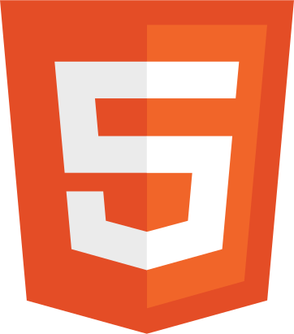
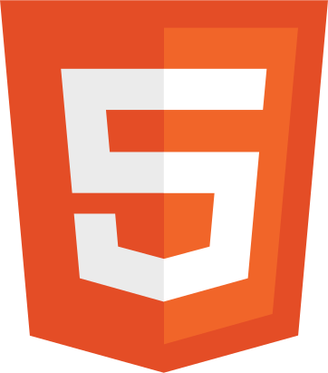

Adrien RUSSO
Développeur PHP / Symfony
Expériences
Développeur
2018-2020 - ROZARDIDéveloppement sites WordPress + WooCommerce, intégration maquettes, sécurisation, hébergement, responsive design, référencement naturel.
ASSISTANT D’ÉDUCATION
2012-2018 - Poitiers et BordeauxSurveillance des élèves, gestion des présences et absences, médiation, aide aux devoirs, prise en charge d’heures d’études.
compétences techniques
savoirs faires
 

formations
DÉVELOPPEUR WEB - TITRE RNCP DE NIVEAU 2
Sept 2019 - Déc 2019 | La Piscine | MérignacProjet de fin : Création d’un site d’annonces immoblières avec Symfony 4.4, SCSS, APIs Google Maps